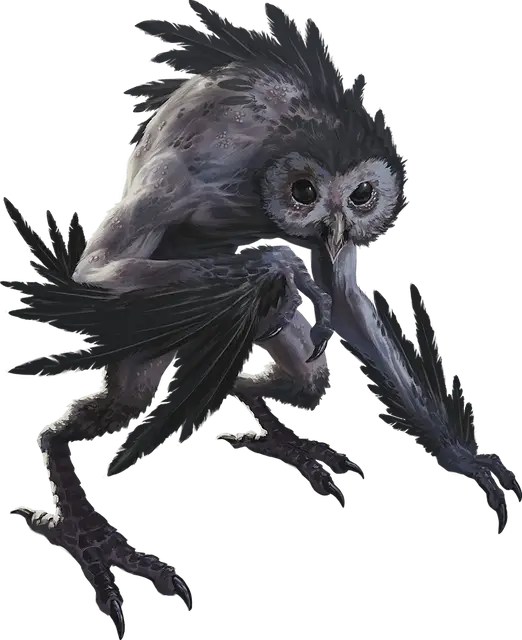

Тлакатеколо
Tlacatecolo
Среднее Исчадие (Демон), обычно нейтрально-злое

Класс Доспеха 13
Хиты 78 (12к8 + 24)
Скорость 30 футов, летая 30 футов
| мод | спас | ||
|---|---|---|---|
| СИЛ | 12 | +1 | +1 |
| ЛОВ | 17 | +3 | +6 |
| ТЕЛ | 14 | +2 | +5 |
| мод | спас | ||
|---|---|---|---|
| ИНТ | 10 | +0 | +0 |
| МДР | 15 | +2 | +2 |
| ХАР | 10 | +0 | +0 |
Навыки Восприятие +5, Скрытность +6
Сопротивление урону холод, яд
Иммунитет к состояниям отравление
Чувства тёмное зрение 120 футов, пассивное Восприятие 15
Языки Общий, Бездны
Опасность 5 (1800 опыта)
Бонус мастерства +3
Особенности
Сопротивление магии. Тлакатеколо совершает с преимуществом спасброски от заклинаний и прочих магических эффектов.
Действия
Мультиатака. Тлакатеколо совершает две атаки Когтями.
Коготь. . Рукопашная атака оружием: +6 к попаданию, досягаемость 5 футов, одна цель. Попадание: 8 (1к8 + 3) колющего урона плюс 14 (3к8) урона ядом.
Смена формы. Тлакатеколо волшебным образом превращается в сову [owl] Среднего размера, сохраняя при этом свою игровую статистику (кроме размера). Это превращение заканчивается, если хиты тлакатеколо уменьшаются до 0 или если он использует действие, чтобы завершить его.
Чумные ветра (Только в форма исчадия; Перезарядка 5-6). Тлакатеколо испускает леденящий, вызывающий болезни ветер по 60-футовой линии шириной 10 футов. Каждое существо в этой области должно преуспеть в спасброске Телосложения Сл 13, иначе получит 26 (4к12) урона холодом и станет отравленным.
Будучи отравленным таким образом, существо не может восстановить хиты. В конце каждого часа существо должно преуспеть в спасброске Телосложения Сл 13, иначе получит 1 степень истощения. Если существо находится под прямыми солнечными лучами, когда оно совершает этот спасбросок, оно автоматически преуспевает.
Если существо становится целью магии, которая оканчивает отравление или болезнь, например, малое восстановление [lesser restoration], в то время как существо не находится под прямыми солнечными лучами, эффект не заканчивается.
Описание
Появляясь в виде пораженных чумой двуногих сов, тлакатеколо сеют болезни и питаются страданиями смертных. Эти исчадия распространяют болезнь, которая высасывает тепло и жизнь из живых, рассеивая их ветрами, хрипящими, как дыхание замерзающего тела. Солнечный свет предотвращает болезнь, но те, кто пострадал, редко выживают в темноте ночи.